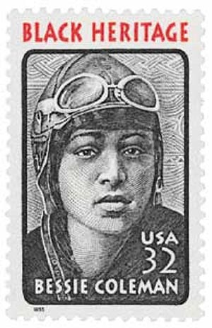

Biography
Bessie Coleman was a woman pilot. She was not just any pilot though, she was the first African American and Native American woman to earn a license, and soar the big blue sky’s. Bessie was not allowed to learn to fly in the US, so she moved to France and earned her licence at the Caudron Brother's School of Aviation. She specialized in stunt flying and parachuting. Bessie’s main goal was to encourage and be a leader for all types of women. She wanted to encourage women to reach and achieve their dreams. Bessie had a full life, but sadly ended in a tragic plane crash, at the age of 34.
Bessie grew up in Atlanta Texas and was one of 13 children. Her father George Coleman was African American and Native American, and worked as a sharecropper. Her mother, Susan Coleman, was also African American and worked as a maid. Both her parents worked tirelessly to support all of their children. At the age of 12, Bessie attended the Missionary Baptist Church in Texas. Years later, she attended Langston University, but only attended for a month for financial reasons.

She then left college, and applied to many flight schools across the country. Not one school would take her because she was both African American and a woman. Months later she was accepted into the Caudron Brothers' School of Aviation in Le Crotoy, France. he received her international pilot’s license on June 15, 1921. She then went on to and shared her story. She gave speeches and showed films and videos of her herself doing the tricks. Her favorite and most known trick was the “loop-the-loops” (making the shape of an “8” in an airplane.) She toured the country giving flying lessons and performing shows. One of her main goals was to push more African American woman to learn how to fly.
Two years after receiving her license Bessie’s aircraft engine stopped and she came crashing down. She survived with only a broken leg and a few bruises and broken ribs. However, in 1926 Bessie was in the passenger seat of an aircraft and the pilot lost control of the plane, resulting in the plane flipping upside down. Bessie was not wearing a seatbelt and at the time there were no roofs for any other protection. She fell out of the plane, and unfortunately falling to her death. Her death was heartbreaking, and affected many. Years later an African American women pilots formed the Bessie Coleman Aviators Club. In 1995, the “Bessie Coleman Stamp” was made to remember all of her accomplishments.